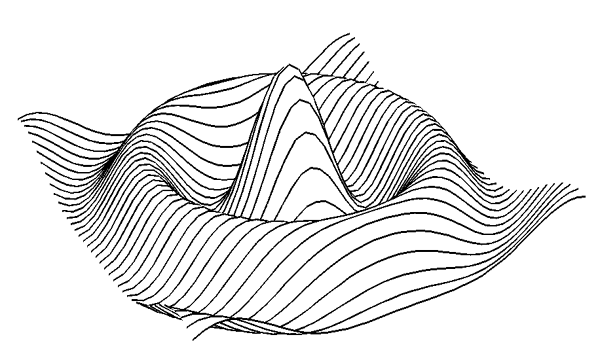
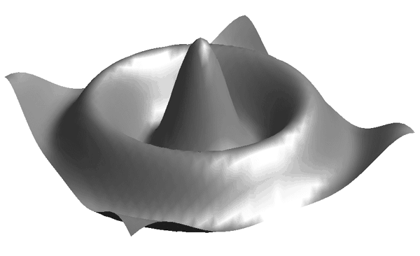
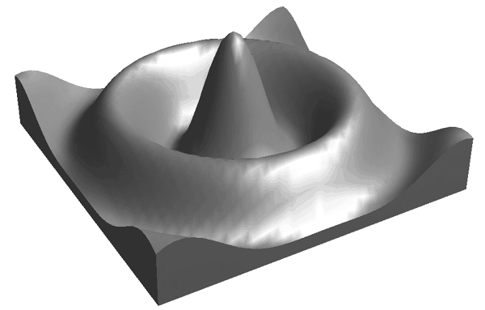

Surface Object

A surface object represents a shaded or vector representation of a mesh grid.
An IDLgrSurface object is an atomic graphic object ; it is one of the basic drawable elements of the IDL Object Graphics system, and it is not a container for other objects.
See IDLgrSurface::Init .
Objects of this class have the following properties. See IDLgrSurface Properties for details on individual properties.
In addition, objects of this class inherit the properties of all superclasses of this class.
This class has the following methods:
In addition, this class inherits the methods of its superclasses (if any).
To create a surface object, provide a two-dimensional array of surface values (Z values) to the IDLgrSurface::Init method. Optionally, you can supply two vectors or arrays X and Y that specify the locations in the XY plane of the Z values provided. If X and Y are not provided, the surface is generated as a function of the array indices of each element of the Z array.
For example, the following statements create a surface object from the two-dimensional array created by the IDL command DIST, as a function of the Z data array indices:
zdata = DIST(40)
mysurf = OBJ_NEW('IDLgrSurface', zdata)
|
|
Similarly, if xdata and ydata are either 40-element vectors or 40x40 element arrays specifying the X and Y values which, when evaluated by some function, result in the zdata array, you would create the surface object with the following statement:
mysurf = OBJ_NEW('IDLgrSurface', zdata, xdata, ydata)
Surface objects have numerous properties controlling how they are rendered. You can set these properties when creating the surface object, or use the SetProperty method to the surface object to change these properties after creation.
Set the STYLE property to an integer value that controls how the surface is rendered. Set the STYLE property equal to one of the following integer values:
For example, the following statement changes the surface object to display the surface as a wire mesh, with the lines drawn in blue:
mysurf->SetProperty, STYLE=1, COLOR=[0,0,255]
The following statement draws the surface as a solid lego -type surface in green:
mysurf->SetProperty, STYLE=6, COLOR=[0,255,0]
You can supply a vector of vertex colors via the VERT_COLORS property. The colors in the vector will be applied to each vertex in turn. If there are more vertices than colors supplied for the VERT_COLORS property, IDL will cycle through the colors. For example, the following statements color each vertex and connecting line one of four colors:
vcolors =[[0,100,200],[200,150,200],[150,200,250],[250,0,100]]
mysurf->SetProperty, STYLE=1, VERT_COLORS=vcolors
IDL provides two types of shading for surfaces. In Flat shading, the color of the first vertex in the surface is used to define the color for the entire surface. The color has a constant intensity. In Gouraud shading, the colors along each line are interpolated between vertex colors, and then along scanlines from each of the edge intensities.
Note: By default, only ambient lighting is provided for surfaces. If you do not supply a light source for your object hierarchy, solid surface objects will appear flat with either Flat or Gouraud shading.
Set the SHADING property of the surface object equal to 0 (zero) to use flat shading (this is the default), or equal to 1 (one) to use Gouraud shading. In the above example using vertex colors, adding the following statement:
mysurf->SetProperty, STYLE=2, SHADING=1
creates a surface in which the color values are interpolated between the vertex colors.
|
|
With a little programming, we can create an application that allows the user to display a surface object and transform its model tree interactively using the mouse.
Example Code:
Example code is located in
surf_track.
pro
in the
examples/doc/objects
subdirectory of the
IDL
distribution. Run the example procedure by entering
surf_track
at the IDL command prompt or view the file in an IDL Editor window by entering
.EDIT surf_track.pro
.
This example uses IDL widgets to create a graphical user interface to an object tree. The SURF_TRACK procedure creates a surface object from user-specified data (or from default data, if none is specified), and places the surface object in an IDL draw widget. The SURF_TRACK interface allows the user to specify several attributes of the object hierarchy via pull-down menus. Finally, the SURF_TRACK procedure uses the example trackball object to allow the user to rotate the surface in three dimensions.
Call the SURF_TRACK procedure without an argument to use the default surface (a Bessel function) or with a two-dimensional array as its argument:
; Make up some data:
zdata = DIST(40)
SURF_TRACK, zdata
We encourage you to inspect the code in surf_track.pro for hints on how to create a widget application around a draw widget that uses Object Graphics.
|
 |
|
 |
|
 |
|
5.0 |
Introduced |
|
5.6 |
Added CLIP_PLANES property |
|
6.1 |
Added ALPHA_CHANNEL, AMBIENT, DIFFUSE, EMISSION, SHININESS, and SPECULAR properties |
|
6.4 |
Added SHADER property Added GetVertexAttributeData, SetVertexAttributeData, Get MultiTextureCoord, and SetMultiTextureCoord methods |